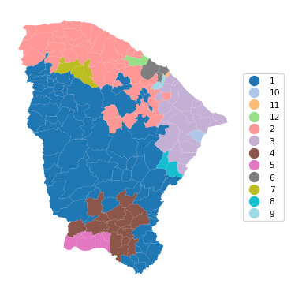
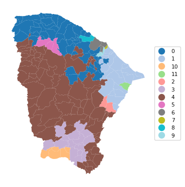
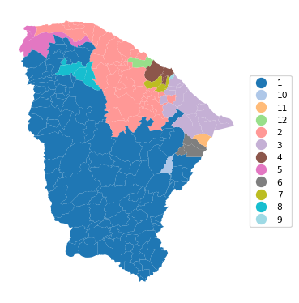
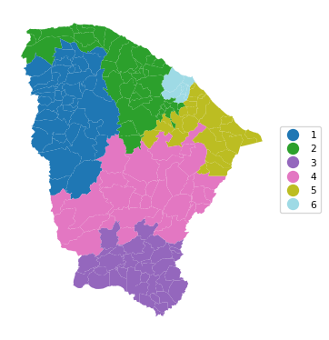
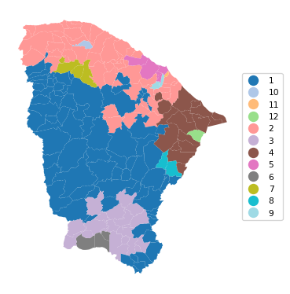

import geopandas as gpd
import numpy as np
import time
from sklearn.cluster import AgglomerativeClustering
from sklearn.preprocessing import StandardScaler
from spatial_cluster_helper import ensure_datasets, cluster_stats, \
cluster_fit, cluster_center, cluster_map
import pygeoda
import libpysal.weights as weights
import warnings
warnings.filterwarnings("ignore")12 Spatially Constrained Clustering - Hierarchical Methods
In this Chapter, we introduce methods to impose hard spatial constraints in a clustering procedure. We consider three approaches that use a hierarchical clustering logic: spatially constrained hierarchical clustering (SCHC), SKATER (Spatial Kluster Analysis by Tree Edge Removal), Assunçao et al. (2006), and REDCAP (REgionalization with Dynamically Constrained Agglomerative clustering and Partitioning), Guo (2008), Guo and Wang (2011). These methods are covered in Chapter 10 of the GeoDa Cluster Book.
Other than a form of spatially constrained hierarchical clustering, spatially constrained clustering methods are not (yet) part of scikit-learn. The corresponding functionality from GeoDa is included in the pygeoda package. In addition, we also employ AgglomerativeClustering from sklearn.cluster, StandardScaler from sklearn.preprocessing, and the helper functions ensure_datasets, cluster_stats, cluster_center, cluster_fit and cluster_map from the spatial-cluster-helper package. We rely on geopandas and numpy for the basics, and use libpysal.weights to construct a contiguity matrix from a GeoDataFrame.
We also import time to compare the relative performance of the different implementations, as well as warnings to avoid some warning messages (suppressed by means of filterwarnings).
We continue with the ceara sample data set for the empirical illustration.
Required Packages
geopandas, numpy, time, warnings, sklearn.cluster, sklearn.preprocessing, pygeoda, libpysal.weights, spatial-cluster-helper
Required Data Sets
ceara
12.1 Preliminaries
12.1.1 Import Required Modules
12.1.2 Load Data
We read the data from the ceara.shp shape file and carry out a quick check of its contents. For this sample data, we use the argument encoding = 'utf-8' in the read_file function to account for the special characters in Brazilian Portuguese.
# Setting working folder:
#path = "/your/path/to/data/"
path = "./datasets/"
# Select the Ceará data:
shpfile = "ceara/ceara.shp"
# Load the data:
ensure_datasets(shpfile, folder_path = path)
dfs = gpd.read_file(path + shpfile, encoding = 'utf-8')
print(dfs.shape)
dfs.head(3)(184, 36)| code7 | mun_name | state_init | area_km2 | state_code | micro_code | micro_name | inc_mic_4q | inc_zik_3q | inc_zik_2q | ... | gdp | pop | gdpcap | popdens | zik_1q | ziq_2q | ziq_3q | zika_d | mic_d | geometry | |
|---|---|---|---|---|---|---|---|---|---|---|---|---|---|---|---|---|---|---|---|---|---|
| 0 | 2300101.0 | Abaiara | CE | 180.833 | 23 | 23019 | 19ª Região Brejo Santo | 0.000000 | 0.0 | 0.00 | ... | 35974.0 | 10496.0 | 3.427 | 58.043 | 0.0 | 0.0 | 0.0 | 0.0 | 0.0 | POLYGON ((5433729.65 9186242.97, 5433688.546 9... |
| 1 | 2300150.0 | Acarape | CE | 130.002 | 23 | 23003 | 3ª Região Maracanaú | 6.380399 | 0.0 | 0.00 | ... | 68314.0 | 15338.0 | 4.454 | 117.983 | 0.0 | 0.0 | 0.0 | 0.0 | 1.0 | POLYGON ((5476916.288 9533405.667, 5476798.561... |
| 2 | 2300200.0 | Acaraú | CE | 842.471 | 23 | 23012 | 12ª Região Acaraú | 0.000000 | 0.0 | 1.63 | ... | 309490.0 | 57551.0 | 5.378 | 68.312 | 0.0 | 1.0 | 0.0 | 1.0 | 0.0 | POLYGON ((5294389.783 9689469.144, 5294494.499... |
3 rows × 36 columns
# the full set of variables
print(list(dfs.columns))['code7', 'mun_name', 'state_init', 'area_km2', 'state_code', 'micro_code', 'micro_name', 'inc_mic_4q', 'inc_zik_3q', 'inc_zik_2q', 'inc_zik_1q', 'prim_care', 'ln_gdp', 'ln_pop', 'mobility', 'environ', 'housing', 'sanitation', 'infra', 'acu_zik_1q', 'acu_zik_2q', 'acu_zik_3q', 'pop_zikv', 'acu_mic_4q', 'pop_micro', 'lngdpcap', 'gdp', 'pop', 'gdpcap', 'popdens', 'zik_1q', 'ziq_2q', 'ziq_3q', 'zika_d', 'mic_d', 'geometry']12.1.3 Variables
We follow the empirical illustration in Chapter 10 of the GeoDa Cluster Book and select the following variables from the ceara sample data set:
| Column Name | Description |
|---|---|
| mobility | Mobility index |
| environ | Environment index |
| housing | Housing index |
| sanitation | Sanitation index |
| infra | Infrastructure index |
| gdpcap | GDP per capita |
We specify the variables in a list for later use.
varlist = ['mobility', 'environ', 'housing', 'sanitation', 'infra', 'gdpcap']12.1.4 Pygeoda Data Preparation
pygeoda uses its own internal data format. It requires a few extra steps to convert a GeoDataFrame to this format. This is accomplished by means of the open command to which the GeoDataFrame (dfs) is passed.
In addition, we create queen contiguity weights using queen_weights and briefly check their characteristics. These weights are critical to obtain spatially constrained cluster results.
ceara_g = pygeoda.open(dfs)
queen_w = pygeoda.queen_weights(ceara_g)
queen_wWeights Meta-data:
number of observations: 184
is symmetric: True
sparsity: 0.02953686200378072
# min neighbors: 1
# max neighbors: 13
# mean neighbors: 5.434782608695652
# median neighbors: 5.0
has isolates: FalseWe need the relevant variables in a pygeoda data format. This is accomplished in the same way as for a standard data frame, by selecting a subset with a list of variables (varlist). This yields the data object data_g that we will use in the pygeoda functions. However, because we will also use the various helper functions from the spatial_cluster_helper module, we will need the usual GeoDataFrame subset as well. We extract the variables as data (geo data frame) for future use.
data_g = ceara_g[varlist]
data = dfs[varlist]12.1.5 PySAL Spatial Weights
The implementation of SCHC by means of scikit-learn requires a sparse array as an argument. The spatial weights created in pygeoda do not have such a property. Instead, we must rely on the sparse attribute that is part of a PySAL spatial weights object.
We use libpysal.weights to obtain a queen contiguity matrix from the GeoDataFrame dfs. Since only the contiguity information is used, we do not need to row-standardize the weights. If the warningsfilter was not set to ignore, this will yield some warnings. They can safely be ignored, but can also be suppressed with the code as shown in the import statements.
wq = weights.Queen.from_dataframe(dfs)12.1.6 Miscellaneous Arguments
We set the number of clusters to 12.
n_clusters = 12Finally, we also compute the usual scaling factor as nn.
n = data.shape[0]
nn = np.sqrt((n-1.0)/n)12.2 SCHC
The first method we consider is spatially constrained hierarchical clustering, or SCHC. This method proceeds in the same manner as hierarchical clustering (see Chapter 7), but the closest units are only merged when they are also contiguous, as defined by the spatial weights. This requires a continuous updating of the spatial weights information, carried out under the hood. The specific pygeoda method is schc. It takes the number of clusters (n_clusters), the spatial weights object (queen_w, from pygeoda), the variables in pygeoda format (data_g), and the linkage method, here set to "ward".
The result is a dictionary that contains various measures of fit, as well as a cluster label for each observation. In contrast to what is the case for cluster computations in scikit-learn, the labels start at 1, not at 0.
We apply this for 12 clusters for the ceara variables and list the keys of the return object.
t0 = time.time()
ceara_clusters1 = pygeoda.schc(n_clusters, queen_w, data_g, "ward")
t1 = time.time()
tpygeoda = t1 - t0
print("Time for pygeoda schc",tpygeoda)
print(ceara_clusters1.keys())Time for pygeoda schc 0.007565975189208984
dict_keys(['Total sum of squares', 'Within-cluster sum of squares', 'Total within-cluster sum of squares', 'Total between-cluster sum of squares', 'The ratio of between to total sum of squares', 'Clusters'])The cluster labels are contained in the 'Clusters' item in the dictionary. We can extract them as cluster_labels1 for use in our helper functions. For example, the helper function cluster_stats will return the cardinality of each cluster. To accomplish this, we need to make sure that cluster_labels1 is a numpy array (hence, the application of np.array).
cluster_labels1 = np.array(ceara_clusters1['Clusters'])
c_stats1 = cluster_stats(cluster_labels1) Labels Cardinality
1 79
2 48
3 21
4 17
5 5
6 4
7 3
8 2
9 2
10 1
11 1
12 1The remaining keys contain measures of fit. We can print them in a simple loop, excluding the last item (the cluster labels).
for key in list(ceara_clusters1.keys())[:-1]: # Print all results except labels
print(f"{key}: {np.round(ceara_clusters1[key],4)}")Total sum of squares: 1098.0
Within-cluster sum of squares: [225.7318 168.248 93.8421 46.7944 18.098 11.0881 5.5954 16.9901
2.0036 0. 0. 0. ]
Total within-cluster sum of squares: 588.3915
Total between-cluster sum of squares: 509.6085
The ratio of between to total sum of squares: 0.4641Alternatively, we can also apply our cluster_fit helper function. The results are identical, as long as we set the correct argument to True. This ensures that the same standardization is used as in GeoDa (the default in scikit-learn is a variance computation without degrees of freedom correction).
fit1 = cluster_fit(data, cluster_labels1, n_clusters,
correct = True, printopt = True)
Total Sum of Squares (TSS): 1098.0
Within-cluster Sum of Squares (WSS) for each cluster: [225.732 168.248 93.842 46.794 18.098 11.088 5.595 16.99 2.004
0. 0. 0. ]
Total Within-cluster Sum of Squares (WSS): 588.391
Between-cluster Sum of Squares (BSS): 509.609
Ratio of BSS to TSS: 0.464The cluster_center helper function will list the cluster mean and median for each variable.
clust_means1, clust_medians1 = cluster_center(data, cluster_labels1)
print("Cluster Means:\n", np.round(clust_means1, 3))
print("Cluster Medians:\n", np.round(clust_medians1, 3))Cluster Means:
mobility environ housing sanitation infra gdpcap
cluster
1 0.965 0.891 0.846 0.672 0.524 4.508
2 0.952 0.844 0.795 0.597 0.504 4.483
3 0.950 0.879 0.844 0.576 0.441 6.834
4 0.951 0.758 0.844 0.649 0.588 4.821
5 0.968 0.815 0.792 0.581 0.438 4.246
6 0.833 0.766 0.818 0.792 0.574 12.600
7 0.992 0.942 0.824 0.870 0.625 6.823
8 0.974 0.657 0.781 0.823 0.693 5.432
9 0.859 0.687 0.722 0.584 0.417 4.644
10 0.957 0.966 0.857 0.593 0.357 40.018
11 0.936 0.789 0.794 0.545 0.425 27.625
12 0.951 0.824 0.771 0.573 0.443 25.464
Cluster Medians:
mobility environ housing sanitation infra gdpcap
cluster
1 0.968 0.895 0.848 0.669 0.523 4.319
2 0.953 0.871 0.794 0.572 0.498 4.120
3 0.954 0.896 0.836 0.575 0.427 5.837
4 0.950 0.758 0.845 0.636 0.590 4.214
5 0.967 0.805 0.804 0.594 0.477 4.285
6 0.835 0.766 0.824 0.799 0.583 11.557
7 0.993 0.932 0.829 0.885 0.606 4.488
8 0.974 0.657 0.781 0.823 0.693 5.432
9 0.859 0.687 0.722 0.584 0.417 4.644
10 0.957 0.966 0.857 0.593 0.357 40.018
11 0.936 0.789 0.794 0.545 0.425 27.625
12 0.951 0.824 0.771 0.573 0.443 25.464Finally, as before, we can use cluster_map to create a unique values map for the clusters.
cluster_map(dfs, cluster_labels1, figsize=(4, 4),
title="", cmap='tab20', legend_fontsize=8)

12.2.1 SCHC with Scikit-Learn
The AgglomerativeClustering functionality in sklearn.cluster includes an option for a so-called structured approach. It imposes prior constraints through a connectivity argument, which takes a sparse CSR array. In practice, this can yield a spatially constrained clustering solution, although it is not directly referred to as such (the constraints are generic). For spatial constraints, we can readily obtain an array in the proper sparse format by applying the sparse method to a PySAL spatial weights object. In our application, this is wq.sparse. Note that the sparse method does not work for the spatial weights object created by pygeoda (i.e., queen_w in our example).
The call to AgglomerativeClustering is structured in the same way as in Chapter 7. First, StandardScaler is used to fit_transform the cluster variables, followed by a scaling for compatibility. An instance of the AgglomerativeClustering class is created as agg_clust, which has all the standard arguments, with the addition of connectivity = wq.sparse. After the fit method is applied, the cluster labels (cluster_labels1a) are extracted from agg_clust.labels_. We then apply the cluster_stats helper function. Whereas the ordering of the cluster cardinalities is different from that provided by pygeoda, the values are identical.
method = 'ward'
t0 = time.time()
X0 = StandardScaler().fit_transform(data)
X = X0 * nn
agg_clust = AgglomerativeClustering(n_clusters=n_clusters,
connectivity = wq.sparse,
linkage=method, compute_distances=True)
agg_clust.fit(X)
cluster_labels1a = agg_clust.labels_
cl1a = cluster_stats(cluster_labels1a)
t1 = time.time()
tsklearn = t1 - t0
print("\nTime for scikit-learn schc ",tsklearn) Labels Cardinality
0 48
1 21
2 2
3 17
4 79
5 3
6 4
7 1
8 1
9 2
10 5
11 1
Time for scikit-learn schc 0.00432586669921875The cluster fit properties are the same as well, as is the resulting cluster map.
fit1a = cluster_fit(data,cluster_labels1a,n_clusters,
correct=True,printopt=True)
Total Sum of Squares (TSS): 1098.0
Within-cluster Sum of Squares (WSS) for each cluster: [168.248 93.842 16.99 46.794 225.732 5.595 11.088 0. 0.
2.004 18.098 0. ]
Total Within-cluster Sum of Squares (WSS): 588.391
Between-cluster Sum of Squares (BSS): 509.609
Ratio of BSS to TSS: 0.464cluster_map(dfs, cluster_labels1a, figsize=(4,4),
title="", cmap='tab20', legend_fontsize=8)

12.3 SKATER
In contrast to the agglomerative SCHC, SKATER is a divisive hierarchical approach. It is based on a reduction of the graph structure implied by the spatial weights to a minimum spanning tree, based on the inter-observation dissimilarity. The original graph is essentially a weighted form of the spatial weights matrix, where the existence of a contiguity between two observations is weighted by their dissimilarity. From the initial minimum spanning tree, the SKATER algorithm proceeds by finding optimal cuts in the tree, which each form a subcluster. This process continues until the desired number of clusters is found.
One downside of this approach is that observations are trapped in subclusters and cannot further be swapped. Technical details are provided in Chapter 10 of the GeoDa Cluster Book.
The algorithm is invoked with the skater method of pygeoda. This again requires the number of clusters (n_clusters), the spatial weights (queen_w) and the pygeoda variables (data_g) as arguments. The return object is a dictionary with the same structure as before.
We use the helper functions to generate the cluster cardinality, cluster fit, cluster centers and cluster map.
For simplicity, all commands are combined.
t0 = time.time()
ceara_clusters2 = pygeoda.skater(n_clusters, queen_w, data_g)
t1 = time.time()
tskater = t1 - t0
print("Time for pygeoda skater ",tskater)
cluster_labels2 = np.array(ceara_clusters2['Clusters'])
cl2 = cluster_stats(cluster_labels2)
fit2 = cluster_fit(data, cluster_labels2, n_clusters,
correct = True, printopt = True)
clust_means2, clust_medians2 = cluster_center(data, cluster_labels2)
print("Cluster Means:\n", np.round(clust_medians2, 3))
print("Cluster Medians:\n", np.round(clust_medians2, 3))
# Plot the clustersTime for pygeoda skater 0.02781391143798828
Labels Cardinality
1 107
2 41
3 15
4 4
5 4
6 3
7 3
8 3
9 1
10 1
11 1
12 1
Total Sum of Squares (TSS): 1098.0
Within-cluster Sum of Squares (WSS) for each cluster: [398.019 135.799 48.297 11.088 9.206 9.127 5.956 5.595 0.
0. 0. 0. ]
Total Within-cluster Sum of Squares (WSS): 623.089
Between-cluster Sum of Squares (BSS): 474.911
Ratio of BSS to TSS: 0.433
Cluster Means:
mobility environ housing sanitation infra gdpcap
cluster
1 0.966 0.880 0.844 0.638 0.537 4.152
2 0.954 0.879 0.807 0.594 0.490 4.598
3 0.948 0.882 0.835 0.544 0.414 6.760
4 0.835 0.766 0.824 0.799 0.583 11.557
5 0.963 0.708 0.751 0.544 0.471 4.263
6 0.966 0.957 0.906 0.671 0.566 5.837
7 0.885 0.687 0.730 0.622 0.427 5.110
8 0.993 0.932 0.829 0.885 0.606 4.488
9 0.936 0.789 0.794 0.545 0.425 27.625
10 0.983 0.644 0.865 0.858 0.859 5.578
11 0.957 0.966 0.857 0.593 0.357 40.018
12 0.951 0.824 0.771 0.573 0.443 25.464
Cluster Medians:
mobility environ housing sanitation infra gdpcap
cluster
1 0.966 0.880 0.844 0.638 0.537 4.152
2 0.954 0.879 0.807 0.594 0.490 4.598
3 0.948 0.882 0.835 0.544 0.414 6.760
4 0.835 0.766 0.824 0.799 0.583 11.557
5 0.963 0.708 0.751 0.544 0.471 4.263
6 0.966 0.957 0.906 0.671 0.566 5.837
7 0.885 0.687 0.730 0.622 0.427 5.110
8 0.993 0.932 0.829 0.885 0.606 4.488
9 0.936 0.789 0.794 0.545 0.425 27.625
10 0.983 0.644 0.865 0.858 0.859 5.578
11 0.957 0.966 0.857 0.593 0.357 40.018
12 0.951 0.824 0.771 0.573 0.443 25.464cluster_map(dfs, cluster_labels2, figsize = (4, 4),
title="", cmap='tab20', legend_fontsize=8)

12.3.1 Additional Constraints in the Clustering
GeoDa offers the option to provide a constraint on the cluster size. This is typically expressed as a function of a spatially extensive variable, such as population in the Ceará example. This additional constraint ensures that no cluster contains less than the set limit. In practice, this is often needed when building regions to report rates on rare diseases to protect privacy. Note that the specified constraints may sometimes conflict with the desired number of clusters, in the sense that there is no solution that satisfies both the number of clusters and the minimum size constraint. In that case, the largest number of possible clusters that satisfy the constraint is given as the solution.
Even though there is no explicit option to provide the number of cluster elements as the constraint, this can readily be accomplished by creating an additional constant variable equal to 1 for all observations. The constraint can then be expressed by selecting this constant variable and setting the number of observations as the value for the constraint (the sum of all the 1 values).
A contraint is implemented in pygeoda by means of the bound_variable and min_bound arguments. Similar to the example in Chapter 10 of the GeoDa Cluster Book, we use population (pop) to set the bound at a minimum of 10% of the overall population. In all other respects, the approach remains the same as the unconstrained solution.
We again group all commands.
t0 = time.time()
ceara_clusters3 = pygeoda.skater(n_clusters, queen_w, data_g,
bound_variable = dfs['pop'],
min_bound = dfs['pop'].sum()/10)
t1 = time.time()
tskaterc = t1 - t0
print("Time for pygeoda constrained skater ",tskaterc)
cluster_labels3 = np.array(ceara_clusters3['Clusters'])
cl3 = cluster_stats(cluster_labels3)
fit3 = cluster_fit(data, cluster_labels3, n_clusters,
correct = True, printopt = True)
clust_means3, clust_medians3 = cluster_center(data, cluster_labels3)
print("Cluster Means:\n", np.round(clust_means3, 3))
print("Cluster Medians:\n", np.round(clust_medians3, 3))Time for pygeoda constrained skater 0.01644420623779297
Labels Cardinality
1 43
2 40
3 36
4 32
5 26
6 7
Total Sum of Squares (TSS): 1098.0
Within-cluster Sum of Squares (WSS) for each cluster: [156.507 172.008 158.72 113.536 208.516 43.745]
Total Within-cluster Sum of Squares (WSS): 853.033
Between-cluster Sum of Squares (BSS): 244.967
Ratio of BSS to TSS: 0.223
Cluster Means:
mobility environ housing sanitation infra gdpcap
cluster
1 0.964 0.884 0.841 0.644 0.532 4.562
2 0.956 0.857 0.797 0.617 0.495 5.292
3 0.961 0.817 0.836 0.645 0.535 4.485
4 0.964 0.880 0.844 0.711 0.544 4.601
5 0.946 0.861 0.830 0.566 0.451 8.434
6 0.851 0.742 0.785 0.715 0.508 9.475
Cluster Medians:
mobility environ housing sanitation infra gdpcap
cluster
1 0.970 0.896 0.845 0.607 0.537 4.097
2 0.954 0.878 0.803 0.591 0.488 4.635
3 0.963 0.828 0.836 0.625 0.547 4.120
4 0.968 0.892 0.849 0.711 0.535 4.417
5 0.949 0.870 0.831 0.545 0.450 5.300
6 0.845 0.741 0.795 0.710 0.497 7.675cluster_map(dfs, cluster_labels3, figsize=(4, 4),
title="", cmap='tab20', legend_fontsize=8)

Note how even though we set the number of clusters to 12, only a solution with six clusters could be obtained such that the minimum population requirement is satisfied. Also, the overall fit of the solution is seriously deteriorated, to a BSS/TSS ratio of 0.223, compared to the original 0.433.
12.4 REDCAP
The final hierarchical method covered in Chapter 10 of the GeoDa Cluster Book is REDCAP, which is a combination of an agglomerative approach with the use of a minimum spanning tree. Several variants of the method are available, combining a type of hierarchical clustering linkage with the way the neighbor structure is updated (for full details, see the GeoDa Cluster Book and the detailed pygeoda documentation). Of all the combinations, five are supported by pygeoda:
firstorder-singlelinkagefullorder-singlelinkagefullorder-averagelinkagefullorder-completelinkagefullorder-wardlinkage
Here, as in Chapter 10 of the GeoDa Cluster Book, we will illustrate the fullorder-wardlinkage method, which is passed as the method argument to the redcap function. Everything else operates as before. Again, we combine all commands.
t0 = time.time()
ceara_clusters4 = pygeoda.redcap(n_clusters, queen_w, data_g,
method = 'fullorder-wardlinkage')
t1 = time.time()
print("Time for pygeoda redcap ",t1 - t0)
cluster_labels4 = np.array(ceara_clusters4['Clusters'])
cl4 = cluster_stats(cluster_labels4)
fit4 = cluster_fit(data, cluster_labels4, n_clusters,
correct = True, printopt = True)
clust_means4, clust_medians4 = cluster_center(data, cluster_labels4)
print("Cluster Means:\n", np.round(clust_means4, 3))
print("Cluster Medians:\n", np.round(clust_medians4, 3))Time for pygeoda redcap 0.031903982162475586
Labels Cardinality
1 77
2 52
3 21
4 16
5 5
6 3
7 3
8 2
9 2
10 1
11 1
12 1
Total Sum of Squares (TSS): 1098.0
Within-cluster Sum of Squares (WSS) for each cluster: [214.614 173.74 63.005 66.063 38.299 9.602 5.595 16.99 2.004
0. 0. 0. ]
Total Within-cluster Sum of Squares (WSS): 589.912
Between-cluster Sum of Squares (BSS): 508.088
Ratio of BSS to TSS: 0.463
Cluster Means:
mobility environ housing sanitation infra gdpcap
cluster
1 0.966 0.894 0.847 0.675 0.526 4.527
2 0.951 0.842 0.793 0.583 0.495 4.974
3 0.952 0.762 0.839 0.626 0.571 4.646
4 0.950 0.887 0.858 0.603 0.440 6.011
5 0.857 0.777 0.809 0.749 0.548 15.173
6 0.969 0.829 0.777 0.632 0.387 4.390
7 0.992 0.942 0.824 0.870 0.625 6.823
8 0.974 0.657 0.781 0.823 0.693 5.432
9 0.859 0.687 0.722 0.584 0.417 4.644
10 0.958 0.973 0.928 0.798 0.647 3.884
11 0.936 0.789 0.794 0.545 0.425 27.625
12 0.957 0.966 0.857 0.593 0.357 40.018
Cluster Medians:
mobility environ housing sanitation infra gdpcap
cluster
1 0.969 0.896 0.848 0.672 0.523 4.369
2 0.952 0.864 0.793 0.564 0.495 4.243
3 0.956 0.758 0.842 0.609 0.569 4.127
4 0.956 0.906 0.856 0.594 0.425 5.300
5 0.845 0.791 0.823 0.784 0.561 15.132
6 0.968 0.805 0.763 0.642 0.400 4.313
7 0.993 0.932 0.829 0.885 0.606 4.488
8 0.974 0.657 0.781 0.823 0.693 5.432
9 0.859 0.687 0.722 0.584 0.417 4.644
10 0.958 0.973 0.928 0.798 0.647 3.884
11 0.936 0.789 0.794 0.545 0.425 27.625
12 0.957 0.966 0.857 0.593 0.357 40.018cluster_map(dfs, cluster_labels4, figsize=(4, 4),
title="", cmap='tab20', legend_fontsize=8)

12.5 Practice
The three spatially constrained hierarchical clustering methods can be applied to any of the data sets used in the previous Chapters to assess the effect of the constraint. In particular, it provides a way to quantify the trade-off between the non-spatial and spatial perspective.